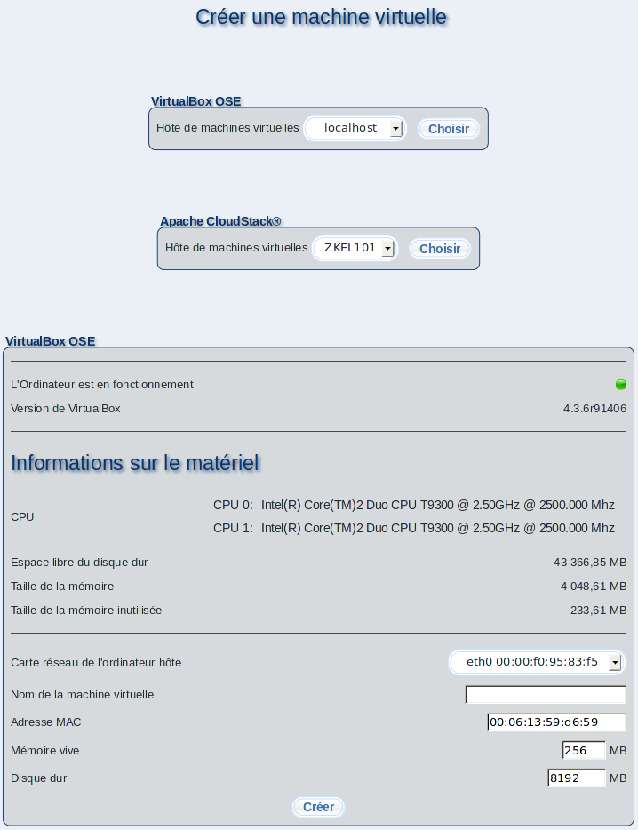

Ce dialogue vous permet de créer des postes client m23 virtuels (machines virtuelles). Les machines virtuelles se partagent les ressources du système hôte et se comportent comme des postes client m23 normaux sur le réseau. Pour la création d'une nouvelle machine virtuelle sur l'hôte, le système hôte doit être démarrée et le paquet de virtualisation m23 doit y avoir été installé (pour plus d'informations, voir ci-dessous)

Sous-sections
root
2013-08-18